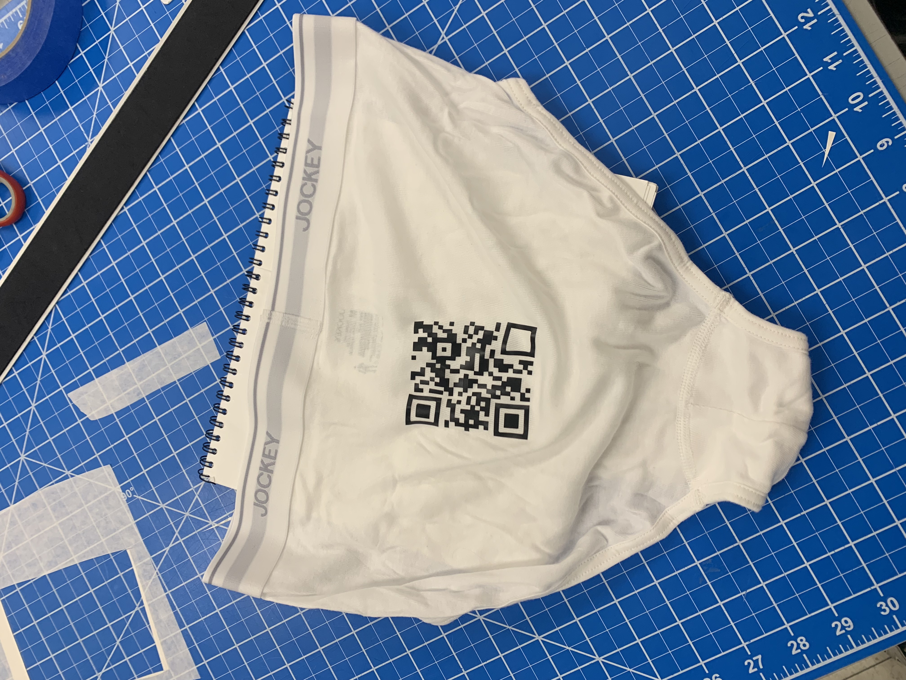
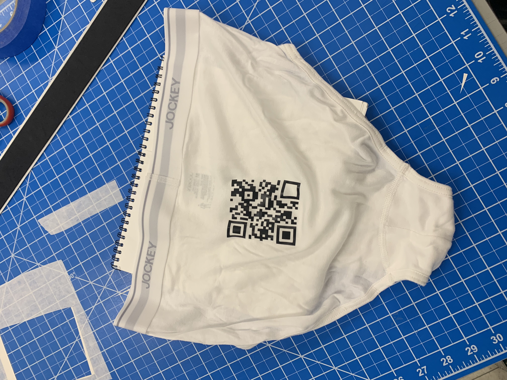

This work is in response to a group competition in Design Studio One. The goal was to get the most scans on an assigned qr code with basic constraints of a maximum 30 8.5x11in posters to promote each group's code. Our team almost immediately inquired about putting the codes on surfaces other than paper. We were approved. Our idea following this was to print or paint the codes onto someone's body and have them run around campus in their underwear stirring up a ruckus. "Have you seen the naked qr code guy?" was our dream line. The naked guy idea proved too challenging so we switched to applying the code on jumpsuits using vinyl. The jumpsuits went to classes and weekend parties. Unfortunately, people were a little standoffish at the sight of rather strange jumpsuits that became increasingly difficult to scan. We lost the competition. Great fun though.


 
